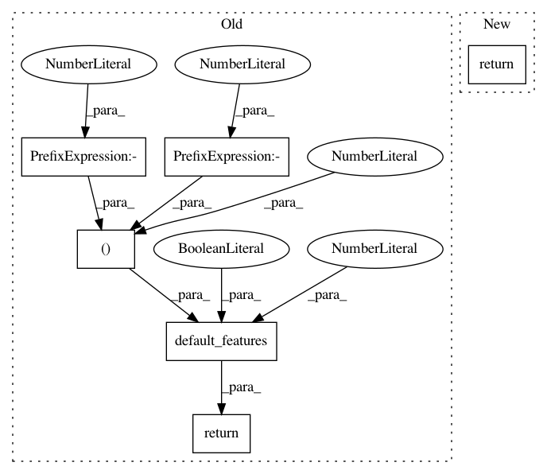

ab49fcd8dc1a43cd64afab2624798f5dbcbeb647,snips_nlu/slot_filler/feature_functions.py,,crf_features,#Any#Any#,23
Before Change
entities_offsets=(-2, -1, 0),
entity_keep_prob=.5)
elif language == Language.DE:
return default_features(language, intent_entities, use_stemming=True,
entities_offsets=(-2, -1, 0),
entity_keep_prob=.5)
elif language == Language.KO:
return ko_features(intent_entities=intent_entities)
else:
raise NotImplementedError("Feature function are not implemented for "
After Change
entities_offsets=(-2, -1, 0),
entity_keep_prob=.5)
elif language == Language.FR:
return fr_features(intent_entities)
elif language == Language.DE:
return de_features(intent_entities)
elif language == Language.KO:
return ko_features(intent_entities=intent_entities)
In pattern: SUPERPATTERN
Frequency: 3
Non-data size: 6
Instances
Project Name: snipsco/snips-nlu
Commit Name: ab49fcd8dc1a43cd64afab2624798f5dbcbeb647
Time: 2017-07-06
Author: clement.doumouro@snips.ai
File Name: snips_nlu/slot_filler/feature_functions.py
Class Name:
Method Name: crf_features
Project Name: snipsco/snips-nlu
Commit Name: d43f6b9260eca98a9ddf818b3502bc9a29eedc83
Time: 2017-04-12
Author: clement.doumouro@snips.ai
File Name: snips_nlu/slot_filler/feature_functions.py
Class Name:
Method Name: crf_features
Project Name: snipsco/snips-nlu
Commit Name: 2835856915384981eea405729f8972111eb343f3
Time: 2017-09-21
Author: clement.doumouro@snips.ai
File Name: snips_nlu/slot_filler/feature_functions.py
Class Name:
Method Name: crf_features